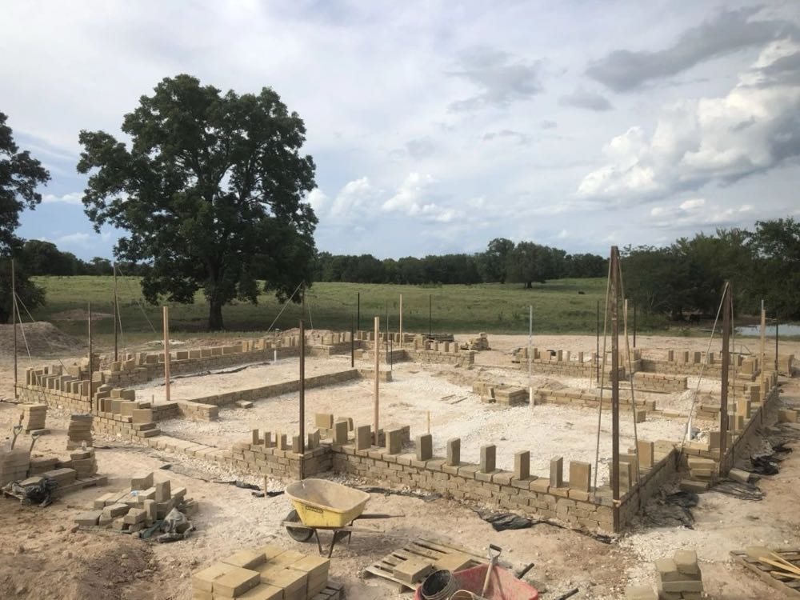
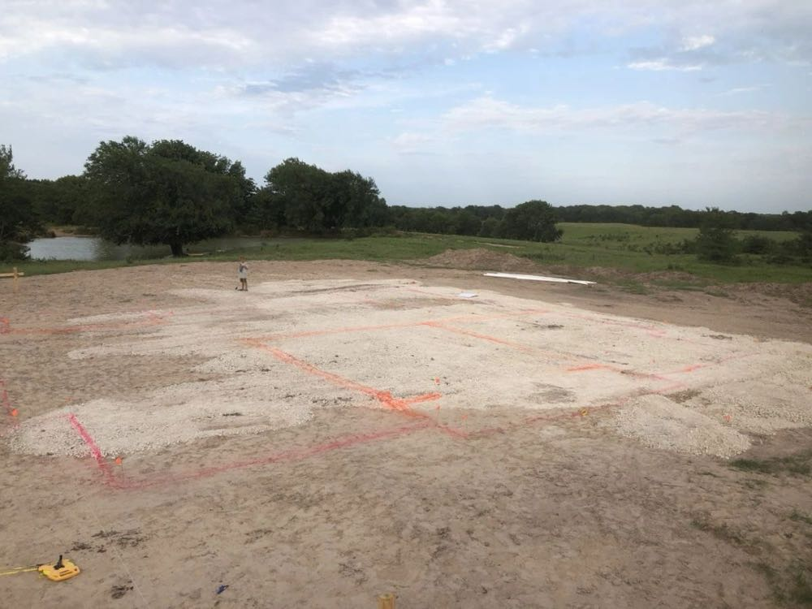
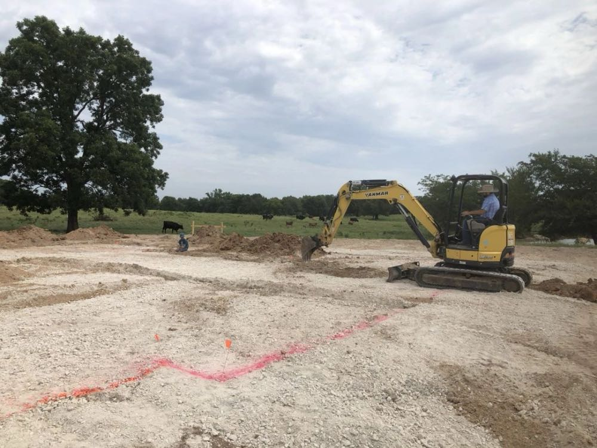
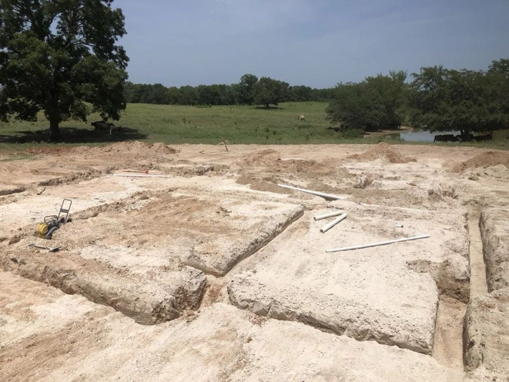
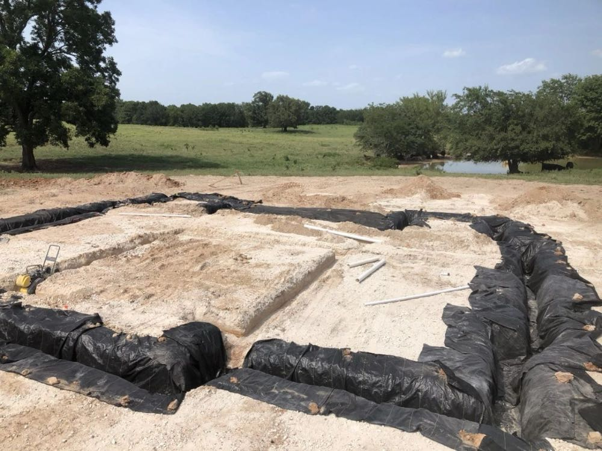
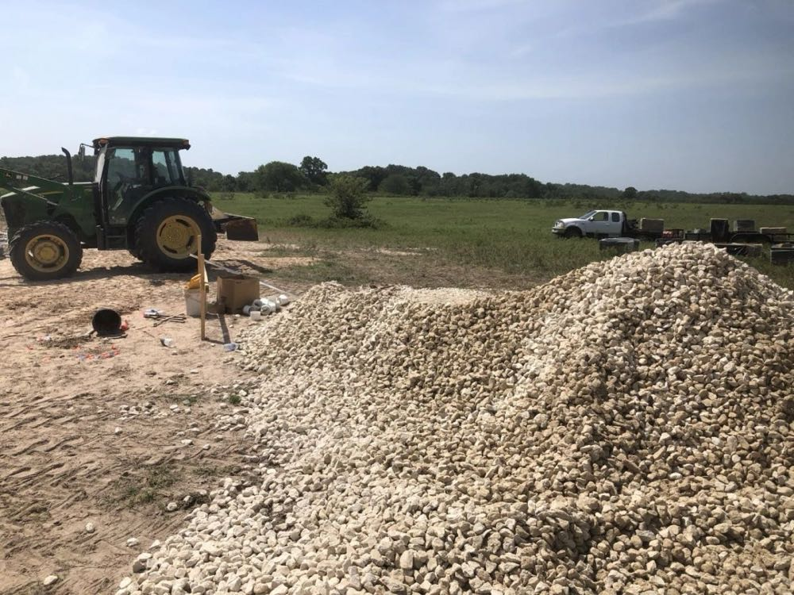
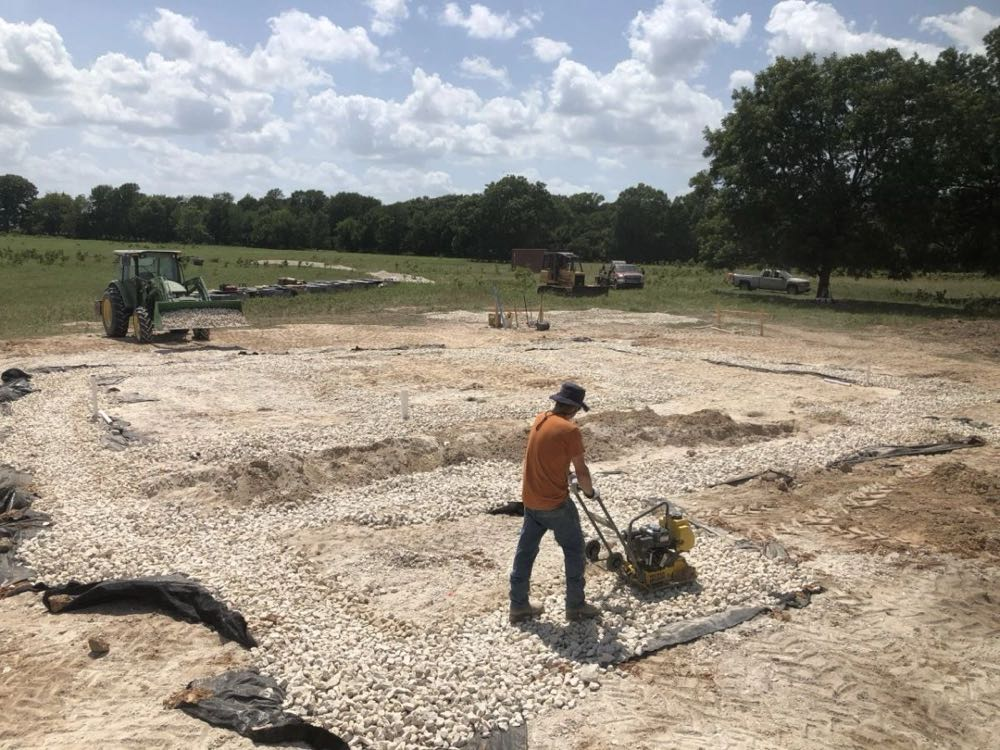
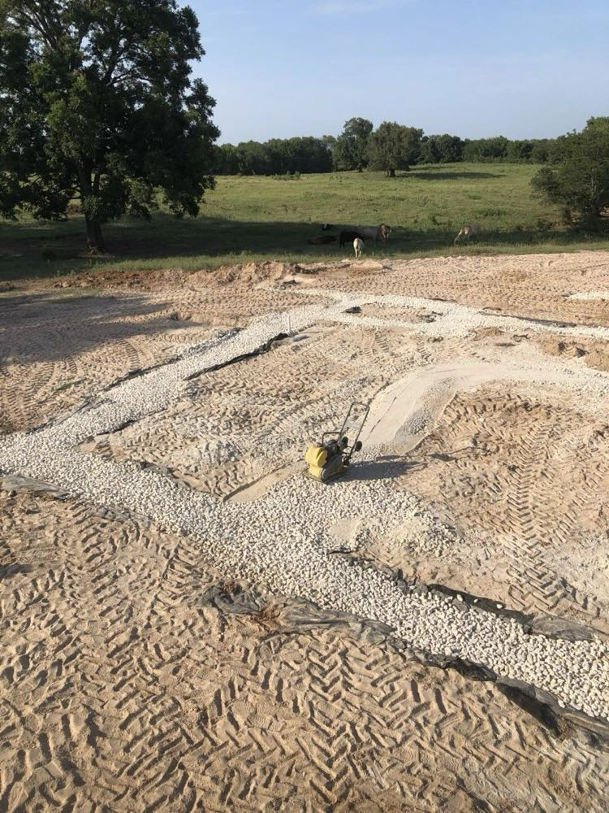
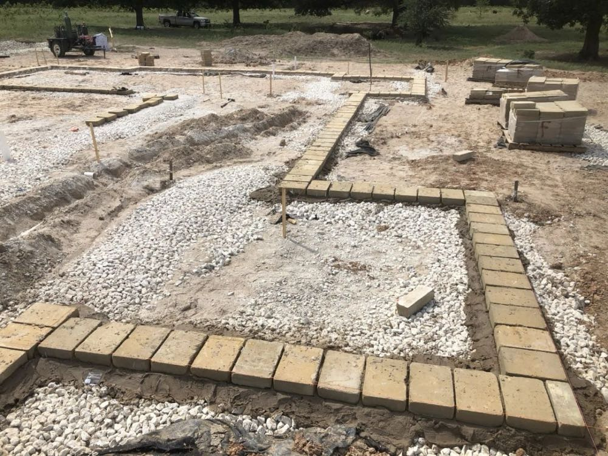

Last month I went up to the Durant, OK area to help start construction on the 2-story, 3,600 sf home that a family is building there. In the spring, they used an AECT mobile block plant to produce 15,000 cement-stabilized CEBs, and by July they were ready to start laying blocks.
The customer chose to use a rubble-trench foundation (RTF) for their home, for all the reasons that make it such a great choice...it's inexpensive, easy, quick, eco-friendly, and extremely effective since it doubles as a french drain. If you're not familiar with the concept of the RTF, it's pretty simple. You dig a trench at least as wide as the thickness of your wall and about five inches or more deeper than the frost line in your area. You line the trench with some geo-textile fabric then fill it with gravel and compact it. In our case, we dug an 18" wide by 30" deep trench and filled it with 2" washed gravel. We filled about 10" of the trench at a time then compacted it into place with a vibrating plate compactor. The geo-textile material ensures no sediment will makes its way into the rubble trench so that it will continue to serve its purpose as a french drain.







That entire process took the two of us about a week to complete, then we were ready to lay blocks!
The CEBs we were laying were made with soil mined right on the customer's property, with about 7% portland cement mixed in. Because these CEBs are cement-stabilized they are impervious to water; as a demonstration of this, at AECT we have some 7% cement-stabilized CEBs that have been sitting in jars of water for over 20 years and they haven't even begun to erode. Because of this property, our cement-stabilized CEBs can be laid without a concrete knee-wall under them. We did put a water proof barrier on the underside of the first course of blocks just to be safe...although with rainwater draining immediately into the rubble trench, there's almost no scenario where water will be sitting around the blocks for any significant amount of time. We used 14% cement-stabilized slurry to lay the first course of blocks, to make it a little extra water resistant. The earth we dug out of the ground for the trenches worked perfectly as a slurry base.

After months of making blocks and all the preparation to get everything you need set up at the build site, it's always a beautiful sight to see the first CEBs going down. This building material speaks for itself :)
Once the first course was down, we were able to set up the story poles (21 in all) and level lines and start laying the next courses.

With just a handful of people on the build, we were able to lay the first 6 courses of CEBs in about a week. You can already tell this is going to be an amazing house in a beautiful setting, and we can't wait to see how the rest of it turns out. Stay tuned for more updates!